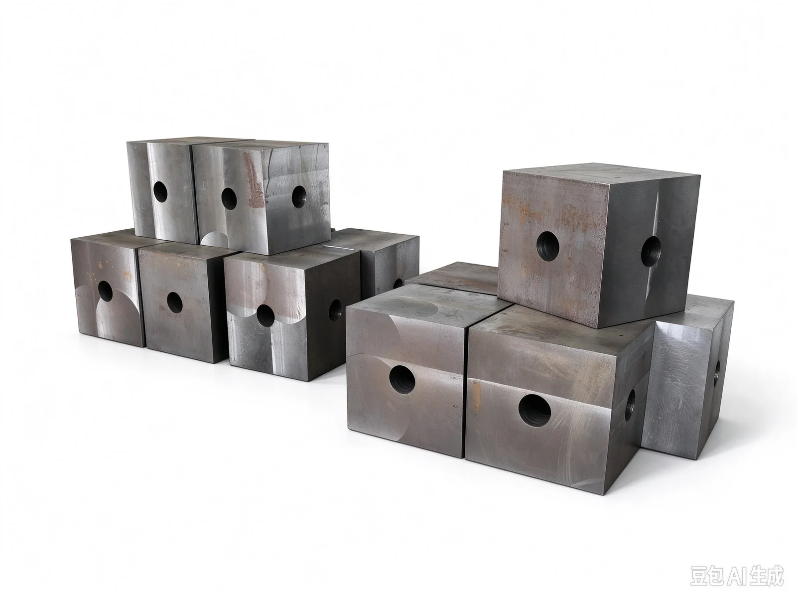
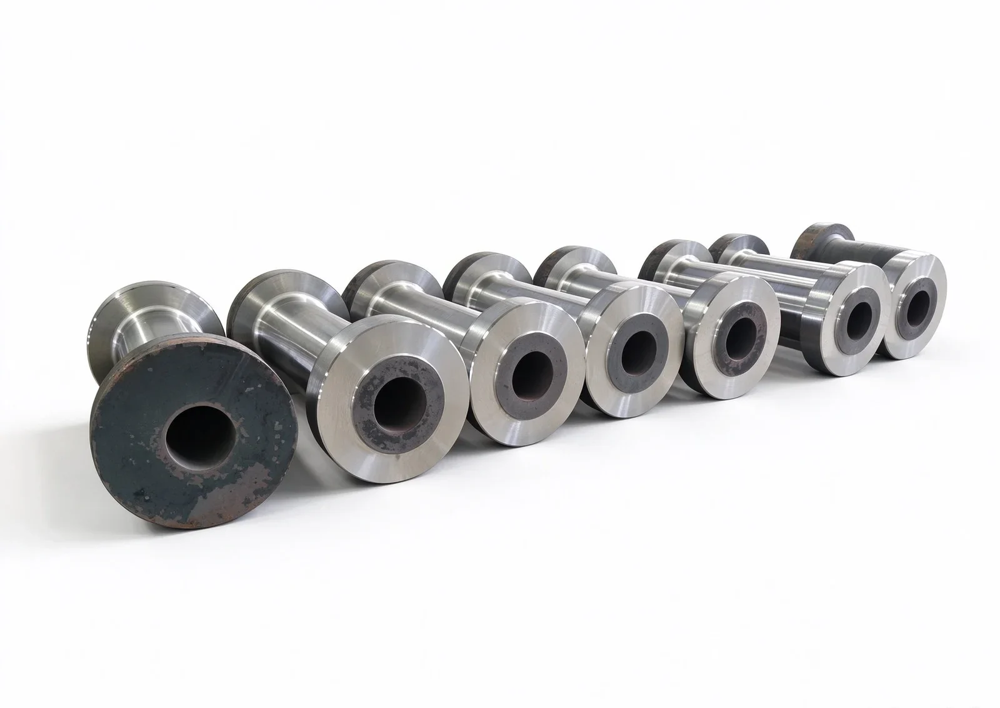
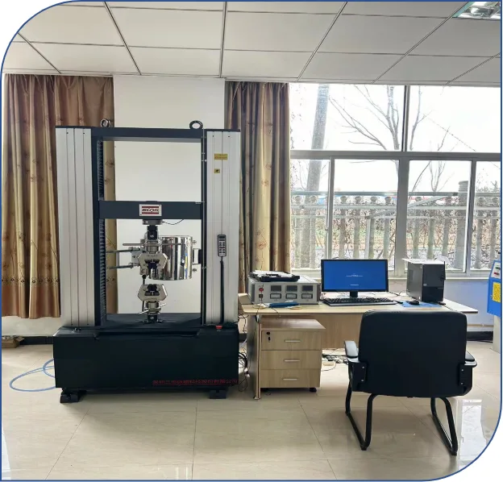

Pressure-bearing forgings for oil and gas manifolds: adapters, square tees and crosses forged from 4130 (30CrMo) alloy steel — forging → quench-and-temper → UT inspection → delivery, delivering reliable internal quality for high-pressure fluid systems.
Manifold forgings operate under high pressure with abrasive and corrosive media, where any internal defect can become a failure origin. We use integral forging instead of welded plate or castings: continuous flow lines and a dense structure free from porosity, gas holes and inclusions. Quench-and-temper delivers a uniform strength-toughness balance, while UT inspection verifies internal quality piece by piece. Reports ship with every batch for full traceability.
| Main Products | Adapters (Tubing Adapters) · Square Tees · Square Crosses · Manifold Pressure Parts |
|---|---|
| Common Materials | Primarily 4130 (30CrMo); also 4140 (42CrMo) / 35CrMo / 20CrMo etc., selected per drawing and service conditions |
| Supply Form | Forged Blanks / Rough-Machined / Quenched & Tempered (as agreed) |
| Quality Control | Chemical Composition · Mechanical Properties · UT Inspection · Hardness Testing |
| Standards | GB/T 228.1 Mechanical Properties · GB/T 6402 UT · GB/T 3077 Alloy Structural Steel (per customer drawings and acceptance criteria) |



Pressure-bearing forgings for high-pressure manifolds and wellhead equipment.
Tubing adapter forgings for transitioning between pipe sizes and connection types, forged for dense, defect-free pressure-bearing sections.
Square tee forgings for flow splitting and merging in manifold main bores, with uniform wall thickness and safe pressure containment.
Cross forgings for multi-way manifold convergence and pressure distribution — integrally forged to eliminate weak weld joints under frequent high-pressure cycling.
Valve bodies, flanges and wellhead fittings — build-to-print or sample-based, produced and inspected to your acceptance criteria.
Every step backed by inspection, from material to finished product.
Integral forging replaces welded assemblies, eliminating welds — the traditional weak point in pressure containment.
Quenched-and-tempered 4130 (30CrMo) offers an excellent strength-toughness balance for high pressure and cyclic loading.
Ultrasonic testing per GB/T 6402 verifies internal quality piece by piece — no hidden defects leave our plant.
Chemical, mechanical and UT reports ship with every batch — traceable and verifiable.
Every process is recorded, making each pressure part verifiable and traceable.
Manifold pressure parts operate under high pressure with abrasive and corrosive media. Welded assemblies have welds as an inherent weak point, while castings may carry porosity, gas holes and inclusions. Integral forging delivers continuous flow lines and a dense structure that eliminates these risks at the source.
4130 (30CrMo) is a medium-carbon Cr-Mo alloy steel with good hardenability. Quenched and tempered, it offers an excellent strength-toughness balance and is a standard choice for manifold pressure parts. Specific mechanical requirements follow your drawing and acceptance criteria; we heat-treat accordingly and issue measured reports. For higher strength grades, 4140 (42CrMo) is available.
Yes. We support build-to-print and sample-based customization — forging, quench-and-temper and inspection per your bore, wall thickness, material and acceptance criteria. Special requirements such as hardness range, UT level and sample location are confirmed during technical review.
As standard, we provide chemical composition, mechanical property and UT reports with each batch — traceable and verifiable. Customer-specified third-party witnessing, special UT standards or additional testing can be agreed during order technical review.
Large-bore cylinder barrel forgings with dense structure and uniform wall thickness.
View details →